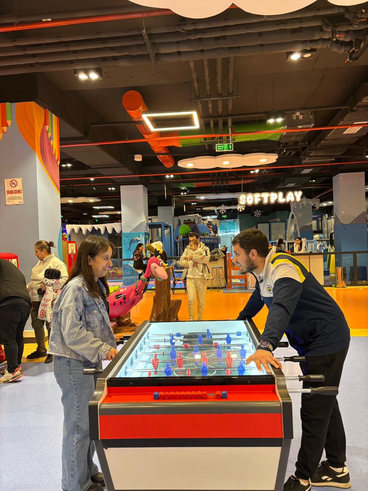

İlk Buluşmamız
Bebeğim, o gün asla unutulacak bir gün değil… Çünkü “double Özo”nun başlangıcının ilk temelleri işte tam da o gün atıldı. O günün değeri, sadece bir tarih değil; hayatımın paha biçilemez sevdiceğimle daha da yakınlaştığım, kalplerimizin aynı ritimde çarptığını hissettiğim bir dönüm noktası olmasıdır. Konuşmalarımız… Ah, konuşmalarımızın her biri ayrı bir hazineydi. Söylediğimiz her kelime, paylaştığımız her cümle, sanki ruhlarımızın birbirine dokunan ince iplikleri gibiydi. O anlarda zaman durdu, dünya sustu, sadece sen ve ben vardık. Her bakışında içimde bir evren açıldı, her sözünde kalbime yeni bir ışık doğdu. İyi ki tanımışım seni… İyi ki yollarımız kesişmiş, iyi ki o gün birbirimize daha da yaklaşmışız. Seninle tanışmak, hayatımın en güzel tesadüfü değil; kaderin bana sunduğu en büyük armağan. Seninle olmak, sıradan bir anı bile eşsiz bir hatıraya dönüştürüyor. O gün, bizim için sadece bir başlangıç değil; geleceğe uzanan bir köprüydü. Seninle attığım her adımda, içimde büyüyen sevgi daha da kök salıyor. Seninle konuşmak, seninle gülmek, seninle susmak bile paha biçilemez. Çünkü seninle her şey anlamlı, seninle her şey gerçek. Sevgilim, sen benim en değerli yol arkadaşım, en güvenilir limanım, en güzel mucizemsin. O günün hatırası, kalbimde sonsuza kadar saklı kalacak. Ve ben her hatırladığımda, aynı heyecanı, aynı sıcaklığı, aynı derin sevgiyi yeniden yaşayacağım.
Ben bir kere o güzel gözlerine yenildim oyunlarda kazanmamın hiç bir önemi yok bebeğimm her daimm kazanan sensin.
Sevdiğim Şeyler
- 🌹Güzelliğin… Güzel gözlerin… Gülüşünle dünyamı aydınlatışın… Beraber dinlediğimiz şarkılar, yaptığımız aktiviteler… Hepsini çok seviyorum. Ama sadece bunlar değil; seninle yaşadığım her ayrıntı, her küçük an benim için paha biçilemez bir hazine. • Seninle sabahları uyanmak, ilk mesajını görmek… • Birlikte kahve içmek, aynı fincandan mutluluğu paylaşmak… • Yan yana yürürken ellerimizin birbirini bulması… • Sessizce oturup sadece birbirimizin varlığını hissetmek… • Birlikte film izlerken senin gülüşünü duymak, gözlerinde o ışığı görmek… • Küçük sürprizler yapmak, senin şaşırışını ve sevinişini izlemek… • Gece uzun uzun konuşmak, hayallerimizi birbirimize anlatmak… • Senin sesini duymak, bana huzurun en saf halini getirmesi… • Birlikte fotoğraf çekmek, her karede sevgimizi ölümsüzleştirmek… • Seninle aynı şarkıya eşlik etmek, kalplerimizin ritmini müziğe katmak… • Birlikte planlar kurmak, geleceği hayal etmek… Seninle olan her şey, sıradan bir anı bile eşsiz bir hatıraya dönüştürüyor. Senin gözlerin bana gökyüzünü hatırlatıyor; gülüşün ise güneşi… Seninle olduğumda dünya daha renkli, daha anlamlı, daha yaşanılır bir yer oluyor. Sevgilim, sen benim en güzel mucizemsin. Seninle geçirdiğim her saniye, kalbime yeni bir şiir yazıyor. Ve ben biliyorum ki bu şiir hiç bitmeyecek, çünkü seninle her gün yeni bir mısra ekleniyor.
BİİÜÜSSÜÜRÜÜÜ BİİSSS

Kalbimin en güzel yerinden kalbine sevgilim.
Sevgilim… Bugün günlerden 14 Şubat, bizim günümüz.Bu tarih, başkaları için sıradan bir sevgililer günü olabilir ama bizim için çok daha derin, çok daha özel bir anlam taşıyor. Çünkü bu gün, sadece sevgimizi kutladığımız bir gün değil; aynı zamanda kalplerimizin birbirine daha sıkı kenetlendiği, geleceğe dair umutlarımızın daha da büyüdüğü bir gün. Seninle bu günü yaşamak, bana hayatın en güzel armağanı gibi geliyor. Senin gözlerinle dünyam aydınlanıyor, gülüşünle içimdeki bütün karanlıklar dağılıyor. Seninle yan yana olduğumda, sıradan bir an bile eşsiz bir hatıraya dönüşüyor. Birlikte dinlediğimiz şarkılar, yaptığımız küçük büyük aktiviteler, paylaştığımız kahkahalar… Hepsi kalbimde birer inci tanesi gibi birikiyor. Rabbimden tek dileğim, nice yıllar boyunca bu günü hep beraber kutlamamız. Her yeni 14 Şubat’ta el ele, kalp kalbe, aynı duayı ederek girmemiz. Seninle yaşlanmak, seninle her yılın yeni başlangıcına adım atmak, seninle her günü bayram gibi yaşamak… İşte en büyük hayalim bu. Sevgilim, sen benim için sadece bir sevgili değil; aynı zamanda en yakın dostum, en güvenilir sırdaşım, en güzel mucizemsin. Senin varlığın bana her gün yeniden umut veriyor, her gün yeniden sevginin ne kadar büyük bir güç olduğunu hatırlatıyor. Bugün bizim günümüz… Ama aslında seninle geçen her gün, benim için bir 14 Şubat. Çünkü seninle olduğum her an, sevgiyi en saf haliyle yaşıyorum. Ve biliyorum ki bu sevgi, yıllar geçse de hiç eksilmeyecek; aksine daha da büyüyerek kalplerimizi saracak. ... 💕